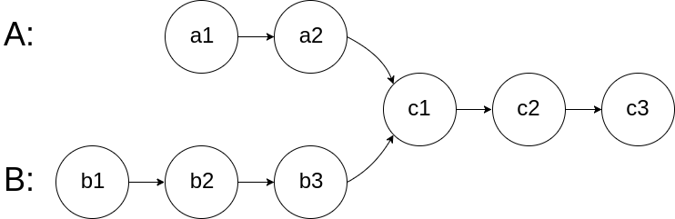
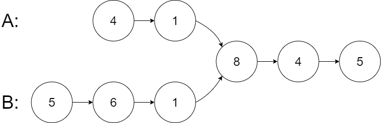
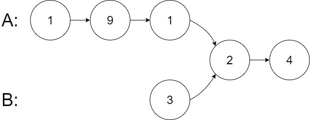
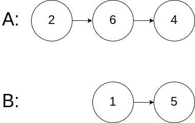

题面
给你两个单链表的头节点 headA 和 headB ，请你找出并返回两个单链表相交的起始节点。如果两个链表不存在相交节点，返回 null 。
图示两个链表在节点 c1 开始相交：

题目数据 保证 整个链式结构中不存在环。
注意 ，函数返回结果后，链表必须 保持其原始结构 。
示例 1：

输入： intersectVal = 8, listA = [4,1,8,4,5], listB = [5,6,1,8,4,5], skipA = 2, skipB = 3
输出： Intersected at '8'
解释： 相交节点的值为 8 （注意，如果两个链表相交则不能为 0）。
从各自的表头开始算起，链表 A 为 [4,1,8,4,5]，链表 B 为 [5,6,1,8,4,5]。
在 A 中，相交节点前有 2 个节点；在 B 中，相交节点前有 3 个节点。示例 2：

输入： intersectVal = 2, listA = [1,9,1,2,4], listB = [3,2,4], skipA = 3, skipB = 1
输出： Intersected at '2'示例 3：

输入： intersectVal = 0, listA = [2,6,4], listB = [1,5], skipA = 3, skipB = 2
输出： No intersection
解释： 从各自的表头开始算起，链表 A 为 [2,6,4]，链表 B 为 [1,5]。
由于这两个链表不相交，所以 intersectVal 必须为 0，而 skipA 和 skipB 可以是任意值。提示：
listA中节点数目为mlistB中节点数目为n1 <= m, n <= 3 * 1041 <= Node.val <= 105- 如果
listA和listB没有交点，intersectVal为0 - 如果
listA和listB有交点，intersectVal == listA[skipA] == listB[skipB]
进阶： 你能否设计一个时间复杂度 O(m + n) 、仅用 O(1) 内存的解决方案？
思路
- 注意：题面中的
skipA、skipB、intersectVal是测试系统用来构造链表的参数，不会传给你的函数。函数只接收两个头节点headA和headB，不知道长度、不知道在哪相交、甚至不知道有没有交点，所以只能通过遍历来找 - 双指针等距法：让两个指针走相同的总路程，消除链表长度差，在交点相遇
原笔记中的自定义题图文件未找到
- 设「第一个公共节点」为 node，「链表 headA」的节点数量为
a，「链表 headB」的节点数量为b，「两链表的公共尾部」的节点数量为c，则有： - 头节点 headA 到 node 前，共有
a - c个节点 - 头节点 headB 到 node 前，共有
b - c个节点 - 构建两个指针 A、B 分别指向 headA、headB：
- 指针 A 先遍历完链表 headA，再开始遍历链表 headB，当走到 node 时，共走步数为：a + (b - c)
- 指针 B 先遍历完链表 headB，再开始遍历链表 headA，当走到 node 时，共走步数为：b + (a - c)
- 此时指针 A、B 重合：a + (b - c) = b + (a - c)，有两种情况：
- 若两链表有公共尾部（即 c > 0）：指针 A、B 同时指向「第一个公共节点」node
- 若两链表无公共尾部（即 c = 0）：指针 A、B 同时指向 null
- 因此返回 A 即可
A = A.next if A else headB：如果 A 还没走到头，正常走下一步；如果走到了 None（链表末尾），切换到另一条链表的头
代码实现
struct ListNode {
int val;
ListNode *next;
ListNode(int x) : val(x), next(NULL) {}
};
class Solution:
def getIntersectionNode(self, headA: ListNode, headB: ListNode) -> Optional[ListNode]:
A, B = headA, headB
while A != B:
A = A.next if A else headB
B = B.next if B else headA
return A- 复杂度：时间 O(m + n)，空间 O(1)